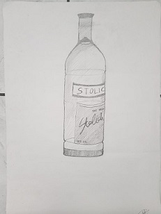
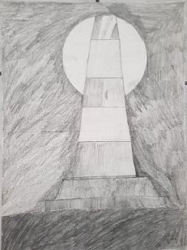
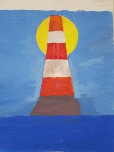
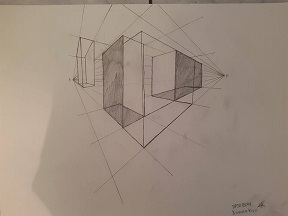

Στην πρώτη εικόνα βλέπουμε την αποτύπωση ενός μπουκαλιού.Ο στόχος ήταν η παρατήρηση πρώτα γενικά του μπουκαλιού που υπήρχε μπροστά μας και στην συνέχεια τα σχήματα που υπάρχουν για να το δημιουργήσουμε!Στην διπλανή εικόνα είχαμε να αποτυπώσουμε μια σύνθεση σε διάφορες αποχρώσεις του γκρι.Σκοπός της εργασίας αυτής ήταν να διακρίνουμε τα σκούρα γκρι από τα ανοιχτά, να βλέπουμε πως πέφτει το φως στην συνθεσή μας και να το αποτυπώσυμε στο χαρτί. Ο ίδιος σκοπός ήταν και σε αυτή τη σύνθεση μόνο που αυτή την φορά είχαμε να δούμε το φως και τις αλλαγές με την βοήεια των χρωμάτων και να διακρίνουμε τις διάφορες αποχρώσεις των χρωμάτων βάση της γωνίας του φωτός.O κώνος όμως εκτός από τα πολλά χρωματά έχει κάτι ακόμη.Κάνε click πάνω του και ανακαλυψέ το! Στην τελευταία εικόνα στόχος ήταν να παραστήσουμε την επιφάνεια σε τρισδιάστατη μόρφη με την χρήση δύο σημείων φυγής και να αντιληφθούμε πως βλέπουμε το χώρο είτε από πάνω είτε από κάτω.
   